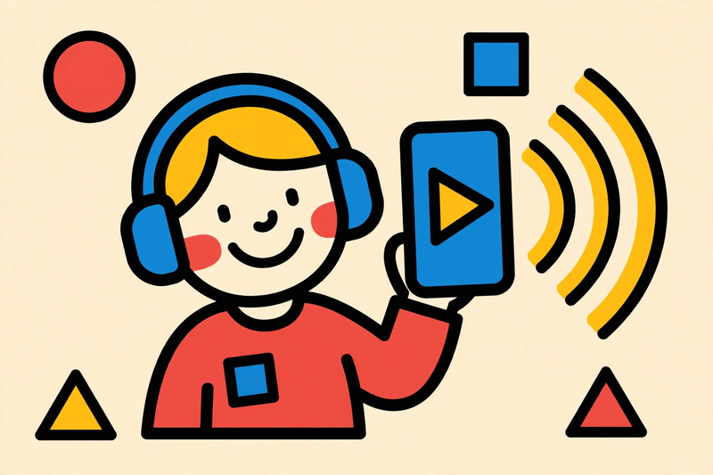
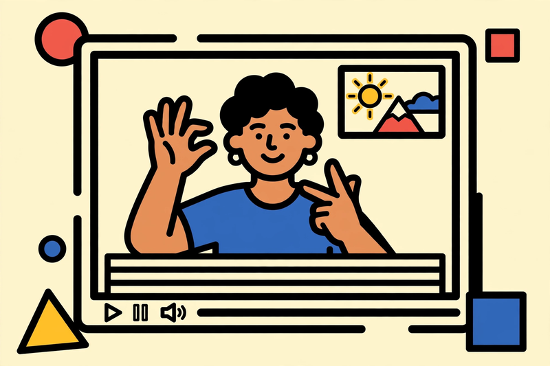
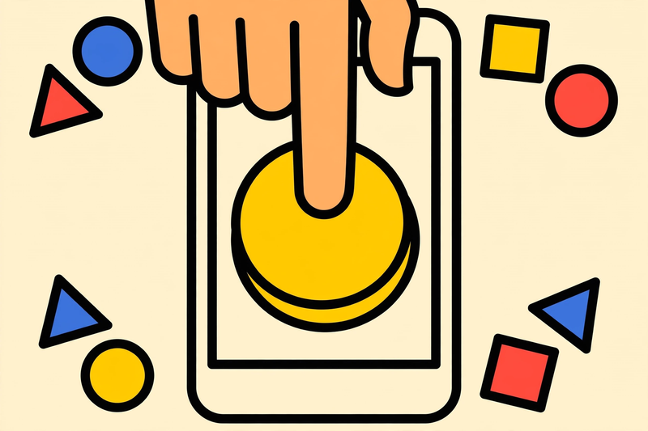
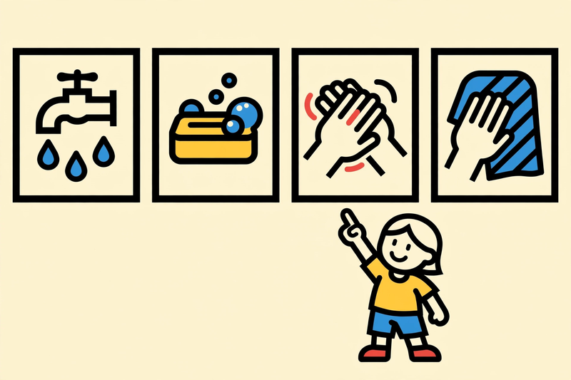
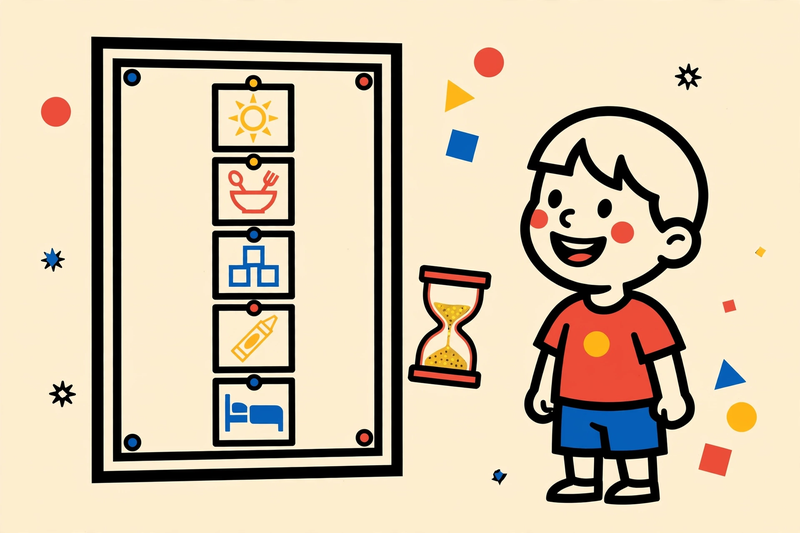
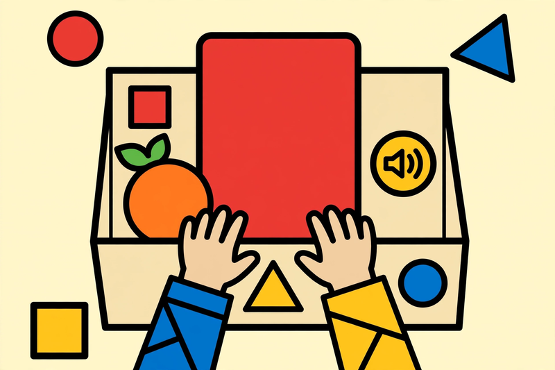
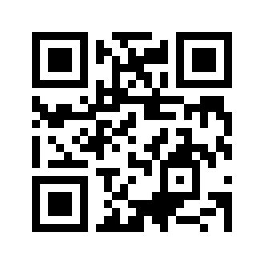

Inclusive EdTech Design Bootcamp
for Special Educators
Workshop Pengembangan Media Pembelajaran Berbasis Digital — Departemen Pendidikan Khusus, Universitas Negeri Malang, 30 September 2026.
Butuh penyesuaian tampilan? Buka toolbar aksesibilitas AksesKita lewat tombol melayang ♿ di pojok layar, atau tekan Alt+A.
Tekan Lanjut atau tombol panah kanan untuk mulai.
Halo, saya Muhammad Anas Yusuf
Web Application Developer & Technical Lead, membangun aplikasi web yang inklusif dan berdampak sosial, dari konsep sampai deployment.
Akseskita
Perangkat web asistif: toolbar aksesibilitas & komunikator AAC visual. Open source, bilingual ID/EN.
AccesiLearn
LMS inklusif untuk hambatan visual, auditori, motorik, dan neurodivergen.
SLB Super App
Asesmen diagnostik, PPI, & buku penghubung orang tua–guru untuk SLB.
Pantau GPK
Pemantauan progres siswa inklusi dengan kurva tren & ringkasan AI.
Agenda Hari Ini
- Pembukaan & perkenalan — kenalan dan pemetaan harapan peserta.
- Sesi 1: Kenapa teknologi harus inklusif? — masalah, data, dan urgensi.
- Sesi 2: Memahami keberagaman peserta didik — ragam hambatan & prinsip UDL.
- Sesi 3: Prinsip desain media inklusif — 4 prinsip + studi kasus + toolkit gratis.
- Contoh konkret per ketunaan — media nyata yang bisa langsung ditiru.
- Kuis kilat interaktif — main bareng, jawab A/B/C sekelas.
- Penutup — refleksi & tindak lanjut.
Kenapa teknologi harus inklusif?
Pernah mengalami ini?
01
Media pembelajaran yang Anda buat ternyata sulit digunakan sebagian siswa, apa yang terjadi?
02
Siswa harus meminta bantuan terus-menerus hanya untuk mengakses materi, bukan untuk memahami materi.
03
Anda menghabiskan waktu mengakali media, bukan mengajar.
Kesenjangan yang nyata
- Banyak media digital dirancang untuk "siswa rata-rata" yang sebenarnya tidak ada.
- Siswa dengan hambatan visual, auditori, motorik, atau neurodivergen paling dulu tertinggal.
- Guru akhirnya membuat versi kedua, ketiga, beban kerja berlipat.
- Solusi tempelan ("nanti diakali") hampir selalu lebih mahal daripada dirancang inklusif sejak awal.
Apa itu media pembelajaran inklusif?
Media yang dirancang sejak awal agar dapat digunakan oleh semua peserta didik, tanpa perlu adaptasi khusus yang merepotkan.
✕ Bukan
Satu media kaku untuk semua orang.
✓ Melainkan
Satu media lentur yang memberi banyak jalan.
★ Hasilnya
Siswa fokus pada isi belajar, bukan pada cara mengakses.
Memahami keberagaman peserta didik
Ragam hambatan & kebutuhan
Visual
Low vision, buta warna, kebutaan total.
Butuh: kontras, teks alternatif, audio.
Auditori
Tuli, kurang dengar.
Butuh: caption, bahasa isyarat, visual.
Motorik
Keterbatasan gerak tangan/jari.
Butuh: tombol besar, tanpa mouse.
Intelektual
Kebutuhan pemahaman bertahap.
Butuh: bahasa sederhana, langkah kecil.
Neurodivergen
ADHD, disleksia, autisme.
Butuh: minim distraksi, pola konsisten.
Ganda
Kombinasi beberapa hambatan.
Butuh: banyak jalur sekaligus.
UDL: Universal Design for Learning
Tiga prinsip dari CAST, fondasi desain pembelajaran inklusif.
01 · Keterlibatan
Mengapa belajar.
Beri pilihan, kaitkan dengan minat & relevansi hidup siswa.
02 · Representasi
Apa yang dipelajari.
Sajikan materi lewat banyak jalur: visual, audio, teks, praktik.
03 · Aksi & Ekspresi
Bagaimana menunjukkan paham.
Terima beragam cara berekspresi: lisan, tulis, gambar, gerak.
Prinsip desain media inklusif
Empat prinsip praktis. Setiap prinsip disertai contoh benar vs salah.
Dapat dipersepsi
Semua informasi harus bisa ditangkap oleh minimal satu indera, idealnya lebih dari satu.
✓ Lakukan
- Kontras warna teks & latar yang cukup
- Teks alternatif untuk setiap gambar penting
- Caption / subtitle untuk semua audio-video
- Ukuran font bisa diperbesar tanpa rusak
✕ Hindari
- Teks kuning di atas putih
- Gambar diagram tanpa penjelasan teks
- Video pembelajaran tanpa subtitle
- Info penting hanya lewat warna
Dapat dioperasikan
Semua fungsi bisa dipakai semua siswa, dengan cara mereka masing-masing.
✓ Lakukan
- Bisa dinavigasi hanya dengan keyboard
- Tombol & area sentuh cukup besar
- Tidak ada batas waktu yang kaku
- Tidak ada konten berkedip / bergerak otomatis
✕ Hindari
- Tugas yang hangus dalam 10 detik
- Tombol kecil berhimpitan
- Wajib drag-and-drop pakai mouse
- Animasi yang tidak bisa dihentikan
Dapat dipahami
Siswa langsung mengerti apa yang harus dilakukan, tanpa menebak-nebak.
✓ Lakukan
- Instruksi langkah demi langkah, satu per langkah
- Bahasa sederhana & istilah konsisten
- Contoh konkret sebelum tugas
- Umpan balik yang jelas: benar / coba lagi + alasannya
✕ Hindari
- Instruksi panjang satu paragraf
- Istilah ganti-ganti tiap halaman
- Langsung tugas tanpa contoh
- "Salah." tanpa penjelasan
Kokoh
Media tetap berfungsi dengan teknologi bantu dan kondisi yang beragam.
✓ Lakukan
- Struktur heading logis (H1 → H2 → H3)
- Kompatibel dengan screen reader
- Berfungsi di HP spek rendah & internet lambat
- Tidak bergantung pada satu indera saja
✕ Hindari
- Heading dipakai sekadar untuk memperbesar teks
- Tombol berupa gambar tanpa label
- Hanya jalan di laptop terbaru
- Audio sebagai satu-satunya petunjuk
Akseskita
- Perangkat web asistif: toolbar aksesibilitas + komunikator AAC visual.
- Zero dependencies, ringan, jalan di perangkat sederhana.
- Bilingual Indonesia–Inggris; open source.
- Pelajaran: aksesibilitas bisa ditempelkan ke situs yang sudah ada… tetapi jauh lebih kuat bila dirancang sejak awal (itulah tugas kita hari ini).
AccesiLearn & SLB Super App
- AccesiLearn: LMS untuk hambatan visual, auditori, motorik, & neurodivergen.
- SLB Super App: asesmen diagnostik, Program Pembelajaran Individual (PPI), buku penghubung orang tua–guru.
- Pantau GPK: kurva tren perkembangan + ringkasan naratif siap ekspor ke WhatsApp.
- Pelajaran: libatkan pengguna sejak hari pertama; data perkembangan membantu guru mengambil keputusan.
Bikin media inklusif tanpa ngoding
Lima platform gratis yang bisa langsung dipakai, pilih sesuai kebutuhan siswa Anda.
Interaktif & multisensori
H5P via Lumi
Aplikasi desktop gratis (offline) untuk membuat konten H5P.
- Video interaktif dengan kuis di dalamnya
- Kuis drag-and-drop & kartu memori
- Diekspor sebagai satu file HTML siap bagikan
Cocok untuk: semua hambatan, terutama yang butuh repetisi multisensori.
Gratis
Book Creator
Membuat e-book interaktif langsung dari browser/HP.
- Setiap halaman bisa ditempeli rekaman suara guru
- Siswa membalik halaman sambil mendengar narasi
- Bisa disematkan gambar & video pendek
Cocok untuk: tuna netra, disleksia, dan kesulitan membaca.
Gratis
Video, game & desain cepat
CapCut
Editor video gratis (HP & desktop).
- Auto-caption sekali klik untuk semua video materi
- Template teks besar yang mudah dibaca
Cocok untuk: tuna rungu & semua siswa.
Gratis
Wordwall
Satu materi jadi belasan game instan.
- Kuis, maze chase, pasangan kartu, roda acak
- Bisa dimainkan di HP tanpa instal aplikasi
Cocok untuk: ADHD & kesulitan belajar.
Gratis (kuota terbatas)
Canva
Desain infografis & poster materi.
- Accessibility checker bawaan
- Kolom alt text di setiap gambar
Cocok untuk: low vision & semua siswa.
Gratis (kuota terbatas)
Pilih platform dari kebutuhan
Tidak perlu menguasai semuanya, mulai dari SATU kebutuhan siswa Anda:
- Butuh caption untuk video materi → CapCut
- Butuh audio pendamping teks bacaan → Book Creator
- Butuh latihan berulang yang menyenangkan → Wordwall
- Butuh kuis & video interaktif offline → H5P via Lumi
- Butuh bahan visual yang cepat jadi → Canva
Contoh Nyata per Ketunaan
Bukan teori. Ini yang bisa langsung dipakai di kelas.

TUNANETRA / LOW VISION
E-book bersuara: tiap halaman ada tombol play suara guru.
Cara bikin: rekam suara di HP, tempel ke Book Creator.

TUNARUNGU
Video 2 menit: juru isyarat Bisindo di pojok + auto-caption.
Cara bikin: rekam materi, CapCut auto-caption sekali klik.

TUNADAKSA
Kuis tombol raksasa: satu ketuk, tanpa presisi jari.
Cara bikin: pilih template tombol besar, tes navigasi keyboard.
Contoh Nyata per Ketunaan
Lanjutan: dari kebutuhan khusus sampai hambatan ganda.

TUNAGRAHITA
Kartu langkah bergambar: 1 langkah = 1 kartu (cuci tangan 6 kartu).
Cara bikin: foto tiap langkah, susun di Canva.

AUTIS / ADHD / DISLEKSIA
Jadwal visual harian + game maze 2 menit; teks dibacakan audio.
Cara bikin: Canva untuk jadwal, maze di Wordwall.

HAMBATAN GANDA
Kotak sensori: pegang jeruk asli + kartu huruf besar + tombol audio.
Cara bikin: benda sekitar + rekam suara di HP.
Mana Media yang Paling Inklusif?
Pilih jawabanmu dalam 10 detik!
Mana media yang paling inklusif?
Jawabannya: B
Bukan yang paling canggih, tapi yang paling bisa diakses semua orang.
Kenapa B menang?
Caption membantu tunarungu. Transkrip membantu yang koneksinya lemot. Tombol pause memberi kontrol ke anak yang butuh waktu lebih lama. Dan 3 menit lebih ramah fokus daripada 10 menit.
Ingat: aksesibilitas bukan fitur tambahan. Ini fondasinya.
Media Terbaik Bukan yang Tercanggih
Tapi yang bisa diakses semua anak.
Tiga hal yang dibawa pulang:
- Kenali hambatan murid sebelum pilih media.
- Satu media bisa multisensori: visual + audio + sentuh.
- Mulai dari HP dan aplikasi gratis. Jangan tunggu sempurna.
Media Pembelajaran Digital
Muhammad Anas Yusuf

Pindai untuk membuka web saya: anasy.is-a.dev